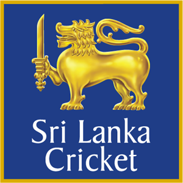

History
 Cricket was introduced to Sri Lanka (then called Ceylon) in the first quarter of the 19th century,
following colonisation of the island by the British. The earliest known match was recorded in 1832 and
the earliest first-class one in 1926. The national team has played Test cricket from 1982.
The Sri Lanka national cricket team represents Sri Lanka in international cricket and is a full member of the International
Cricket Council (ICC) with Test, One Day International (ODI)
and Twenty20 International (T20I) status.
Test Cricket
Sri Lanka obtained Full Member status of the ICC in 1981, becoming the eighth nation eligible to play Test cricket.
The Sri Lanka national cricket team played their first Test match on 17 February 1982, against England, and recorded their
first victory on 6 September 1985, in a match against India. Since then,
they have played nearly 200 matches, against very other Test-playing nation.As of 10 July 2018, Sri Lanka have played
272 Test matches;
they have won 86 matches, lost 101 matches, and 85 matches were drawn.
Sri Lankan Test match captains
- Bandula Warnapura (1981-1983)
- Somachandra De silva(1982-1983)
- Duleep Mendis(1982-1987)
- Ranjan Madugalla(1987-1988)
- Arjuna Ranathunga(1989-1999)
- Aravinda De silva(1991-1999)
- Hashan Thilakarathne(1998-2004)
- Sanath Jayasuriya(1999-2003)
- Marvan Athapaththu(2003-2006)
- Mahela Jayawardene(2005-2013)
- Kumar Sangakkara(2009-2011)
- Thilakarathne Dilshan(2011-2012)
- Angelo Mathews(2012-2017)
- Rangana Herath(2016-2017)
- Dinesh Chandimal(2017-2020)
- Suranga Lakmal(2018-2019)
- Dimuth Karunarathne(2018-prresent)
ODI
Sri Lanka registered their first ODI win against India at Manchester, England, on 16 June 1979.[6] As of 10 July 2018,
Sri Lanka have played 816 ODI matches,
winning 376 matches and losing 399; they also tied 5 matches, whilst 36 had no result.
As of January 2016,In ODI matches, Sri Lanka have played against 17 teams; they have played against India most frequently,
with a winning percentage of 39.49 in 149 matches.
One-Day International captains
- Anura Tennekoon 1975-1979
- Bandula Warnapura 1979-1982
- Duleep Mendis 1982-1987
- Somachandra de Silva
- Ranjan Madugalle 1988
- >Arjuna Ranatunga 1988-1999
- Ravi Ratnayeke 1988
- Aravinda de Silva 1992-19
- Roshan Mahanama 1994
- Sanath Jayasuriya 1998-2003
- Mahela Jayawardene 2004-2013
- Chaminda Vaas 2006
- Kumar Sangakkara 2009-2011
- Tillakaratne Dilshan 2010-2012
- Angelo Mathews 2012-2018
- Dinesh Chandimal 2013, 2018
- Lahiru Thirimanne 2015
- Upul Tharanga 2016-2017
- Chamara Kapugedera 2017
- Lasith Malinga 2017-2019
- Thisara Perera 2017
- Dimuth Karunarathne(2019-2020)
- Kusal Perera (2021)
- Dasun Shanaka(2021-present)
T20
Sri Lanka played their first Twenty20 International (T20I) match at the Rose Bowl,
on 15 June 2006, against England, winning the match by 2 runs.As of 10 July 2018, Sri Lanka
have played 108 T20I matches and won 54 of them;
52 were lost and 1 tied and 1 no result match as well.The team have competed against
13 countries in T20Is, and have played 15 matches against New Zealand. Sri Lanka have defeated
Australia and West Indies 6 occasions each.[39] Sri Lanka was the best T20I team in the world,
where they ranked number one
in more than 32 months, and reached World Twenty20 final in three times.
Twenty20 International captains
- Mahela Jayawardene 2006–2008, 2012
- Tillakaratne Dilshan 2009, 2011
- Kumar Sangakkara 2009–2010
- Thilina Kandamby 2011
- Angelo Mathews 2012–2016, 2018,2021
- Dinesh Chandimal 2013–2016, 2018
- Lasith Malinga 2014–2016, 2018–2021
- Upul Tharanga 2017
- Thisara Perera 2017–2018
- Dasun Shanaka 2019-present
- Kusal Perera 2021
Achivements
Sri Lanka's national cricket team achieved considerable success beginning in the 1990s,
rising from underdog status to winning the Cricket World Cup in 1996, under the captaincy
of Arjuna Ranatunga. Since then, the team has continued to be a force in international cricket.
The Sri Lankan cricket team reached the finals of the 2007 and 2011 Cricket World Cups consecutively.
They ended up being runners-up on both occasions.
ICC Cricket World Cup
| Year |
Round |
| 1996 |
champions |
| 2003 |
semi-finals |
| 2007 |
runners-up |
| 2011 |
runners-up |
| 2015 |
quater-finals |
ICC T20 World Cup

| Year |
Round |
| 2009 |
runners-up |
| 2010 |
semi-finals |
| 2012 |
runners-up |
| 2014 |
champions |
Asia Cup
| Year |
Round |
| 1984 |
second place |
| 1986 |
champions |
| 1988 |
runners-up |
| 1990-91 |
runners-up |
| 1995 |
runners-up |
| 1997 |
champions |
| 2000 |
runners-up |
| 2004 |
champions |
| 2008 |
champions |
| 2010 |
runners-up |
| 2014 |
champions |
Champions Tropy

| Year |
Round |
| 1998 |
semi-finals |
| 2000 |
quater-finals |
| 2002 |
joint champions |
| 2013 |
semi-finals |
World Records
 Sri Lanka holds a unique record of
having the most Test wickets by both a right
arm and left arm bowler:: Muralitharan with 800 wickets and Rangana Herath with 433 wickets.
Sri Lanka holds a unique record of
having the most Test wickets by both a right
arm and left arm bowler:: Muralitharan with 800 wickets and Rangana Herath with 433 wickets.
Muralidharan is a Right-arm offbreak baller and also Rangana Herath is Left-arm Leg Spin Bowler.
Some of the Major World Records
Test
- Highest total
- 952/8d VsINDIA (1997)
- second Most Hundrads in a match
- VsBAN 2013 100s-8
- second Most double hundreds in career
- Kumar Sangakkara MATs-134 INGs-233 200s-11
- second Most hundred partnerships
- Mahela Jayawardhana,Kumar Sangakkara INGs-120 100s-19 50s-27
- Most runs in the career without a hundred
- Niroshan Dickwella
- Mts-45 ING-80 Runs-3154 100s-0 50s-12
- Highest Partnership for any wicket
- Kumar Sangakkara, Mahela Jayawardhana (VsSA 2006)
- Runs-624 for 3rd wicket
- Highest partnership for 2nd wicket
- Sanath Jayasuriya, RS Mahanama (VsINDIA 1997) Runs-576
- second Highest Partnership runs in a career
- Kumar Sangakkara, Mahela Jayawardhana(2000-2014)
- ING-120 Runs-6554
- Most wickets in career
- M. Muralidharan(1992-2010)
- Mts-133 WTS-800
- second Most wickets in a year
- M. Muralidharan (2006)
- Mat-11 WTS-90
- Most wickets in a single ground
- M.Muralidharan(1992-2010)
- Sinhalese Sports Club Ground,Colombo MTS-24 WTS-166
- Fastest to 400,450,500,600,700,750,800 wickets
- M.Muralidharan
- second Most Catches
- Mahela Jayawardhana(1997-2014)
- MTS-149 CTs-205
ODI
- second Highest innings total batting second
- 411/8 VsINDIA (2009)
- Most hundred partnerships in a match
- SriLanka vs India(2009) 100s-4
- second Most runs in career
- Kumar Sangakkara(2000-2015) Runs-14234
- Most runs in a series by a wicket keeper
- Kumar Sangakkara Runs-541
- (ICC Word cup in Australia 2014/15)
- second Most Hundreds in a series
- Kumar Sangakkara 100s-4
- (ICC World cup Australia 2014/15
- Most hundreds in consecutive innings
- Kumar Sangakkara (2015) 100s-4
- second Oldest player to score a hunndred
- Sanath Jayasuriya Age-43y 212d (VsINDIA 2009)
- second Most fifities in career
- Kumar Sangakkara 50s-145
- second Fastest fifties
- Sanath Jayasuriya (VsPakisthan 1996)
- Runs-76 balls-17 6s-5 4s-8
- Most innings before 1st duck
- Kumar Dharmasena ING-72
- Most ducks in career
- Sanath Jayasuriya(1989-2011) 0s-34
- second Most consecutive ducks
- GP Wickramasingha 0s-4
- second Most 4s in career
- Sanath Jayasuriya 4s-1500
- second Fastest to 14000 runs
- Kumar Sangakkara(2015) ING-378
- Most wickets in career
- M.Muralidharan MTS-350 WKTs-534
- Best bowling figures in an innings
- Chaminda Vaas OVERS-8.0 WKTs-8 Econ-2.37
- second Most five wickets in an innings
- M.Muralidharan (1993-2011) MTS-350 5WKTs-13
- second Most 4 wickets in an innings
- M.Muralidharan 4++WKTs-27
-
- Most balls bowled in career
- M.Muralidharan (1993-2011) MTS-350 BALLs-18811
T20I
- first Most fours in an inning
- 4s-30 (2007) VsKENYA
- second Most fours in an inning
- 4s-29 (2009) VsINDIA
- second Most innings before first duck
- Angelo Mathews INGs-56
- third Most wickets in career
- Lasith Malinga (2006-2020) MATs-84 WKTs-107
- Most wickets in a calender year
- Wanindu Hasaranga(2021) MATs-20 WKTs-36
- third Most outstanding bowling analysis in an inning
- Nuwan Kulasekara OVRs-2.0 MDN-2 RUNS-0 WKT-1 (2014)
- second Most madidens in career
- Nuwan Kulasekara (2008-2017) MATs-56 MDN-6 WKTs-66
- Four wickets in four balls
- Lasith Malinga(2019)
- Fastest to 50 wickets
- Ajantha Mendis(2012) MATs-36